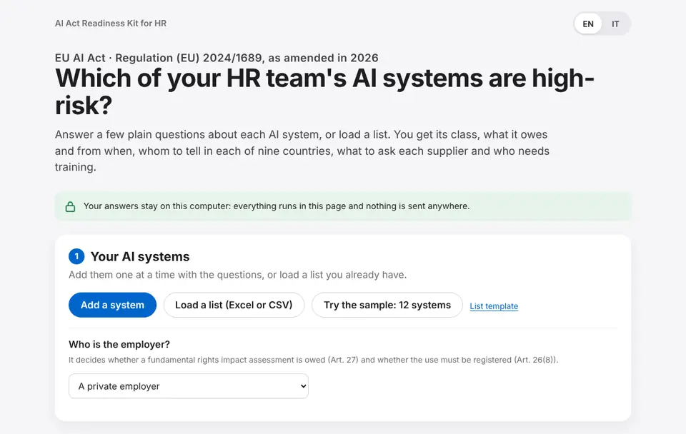

Which of HR's AI systems are high-risk, and what do they owe?
Client: The same four-country employer, whose HR function uses twelve AI systems, from CV screening to a pay review recommender and an attrition model built in-house.
Which systems does the AI Act ban or class as high-risk, what does each owe and from when, how far can the classification be trusted, and who enforces it in each country?

What I did
- Classified twelve systems under the AI Act and the Digital Omnibus, with their obligations, the national rules on telling workers in nine countries, supplier questions, literacy and impact assessments.
- Tested the classification on the 21 workplace cases in the Commission's guidelines on prohibited practices, fixed the two questions they showed wrong, and checked which answers each class rests on.
- Set the real in-house attrition model, from hr-people-analytics, against the 21 provider duties, and ran the pay review recommender on the pay transparency kit's payroll.
- Read who supervises the AI Act at the source where it could be reached, and marked the rest.
What it found
- Asking whether a system reads emotions "from words" was wrong: the ban covers biometric data only, and wellbeing, stress and burnout monitoring are not a medical exception.
- The attrition model's analysis is done and its paperwork is not: logging, quality management, conformity assessment and registration must come before the fix it already plans.
- No merit design closes a pay gap made of level mix; spending the pay transparency kit's cost ceiling first, out of the same budget, clears all twelve flagged categories.
With real data
- The suppliers' instructions for use and their Article 6(4) assessments, on file.
- The Commission's high-risk guidelines, once final, applied to the boundary cases.
- Italy's Law 132/2025 read in the official text, and a labour lawyer in each country for the notices.
How it is checked. 838 figures reconciled between the Excel formulas and Python, recalculated by LibreOffice on every change; the browser tool checked against Python on 16,309 values; every legal statement logged with its source and status, and what could not be read marked as such.
Synthetic or public data; not legal, pay or investment advice. Figures as published on 25 November 2026. Domenico Perroni · HR advisory, people analytics, reward · Kraków · d0m3n1c0x.github.io